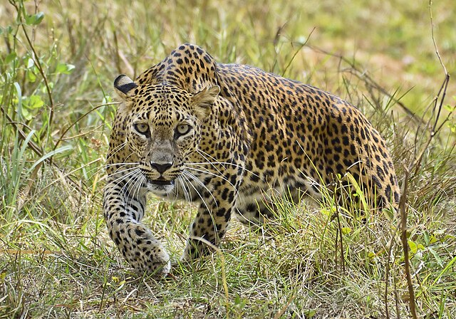

Guia Leopardos
Uma Experiência Animal !
Panthera pardus pardus
Leopardos machos são maiores, pesam em média de 80 kg a 96 kg, sendo este último o peso máximo atingido por um macho. As fêmeas pesam cerca de 55 a 65 kg em média. Entre os anos 1996 e 2000, 11 leopardos adultos receberam rádio-coleiras na terras da Namíbia. Os machos catalogados pesavam apenas 37,5 a 52,3 kg, e as fêmeas entre 24 a 33,5 kg. Leopardos que habitam as montanhas dos Províncias Cabo ao sul parecem fisicamente diferentes dos leopardos que vivem mais ao norte. Seu peso médio pode ser apenas metade do que o leopardo que habita mais ao norte pesa.
Panthera pardus nimr
O leopardo-árabe (Panthera pardus nimr) é uma rara e pequena subespécie de leopardo, nativa do Oriente Médio. Foi oficialmente descrita como uma subespécie com base na analise genética de um único leopardo cativo em israel de origem árabe, que parecia mais intimamente relacionado com o leopardo africano.
O leopardo árabe tem tons de pelagem que variam de amarelo pálido a dourado profundo, vermelho ou cinza e são padronizados por rosetas. É a menor subespécie de leopardo, pesando entre 20 e 30 kg, e com um comprimento total de 1,60 a 2,03 m (incluindo a cauda). O leopardo árabe é muito menor se comparado com o leopardo africano ou outras subespécies asiáticas de leopardos.
Panthera pardus saxicolor
O Leopardo da Anatólia foi descrito pela primeira vez, com base em um único espécime no extremo oeste da Ásia Menor, perto de Izmir, na Turquia.[2] No leste da Turquia, verifica-se uma convergência entre a sua gama e a gama de leopardos caucasianos. Esta espécie de leopardos chegou a rondar os habitats florestais do Egeu, Mediterrâneo e as regiões do leste da Anatólia.[3] Durante os levantamentos realizados entre 1993 e 2002, zoólogos descobriram evidências de leopardos na floresta superior e zonas alpinas das orientais Montanhas Pontic, onde a população humana é baixa. Nesta área, as suas presas selvagens consistem em ungulados, incluindo cervos, camurças, cabras selvagens, javalis, etc
Panthera pardus melas
O leopardo-de-Java (Panthera pardus melas) é uma subespécie de leopardo nativo da ilha Java, na Indonésia. Classificada como uma espécie em perigo crítico pela IUCN desde 2008, a sua população é estimada em menos de 250 indivíduos em fase adulta, somada à preocupante tendência populacional decrescente.
O leopardo de Java foi inicialmente descrito como sendo preto com manchas escuras e olhos cinzas prateados.[2] A espécie possui uma pelagem malhada comum, ou como resultado de um fenótipo recessivo, uma pelagem totalmente preta.[3] É relativamente pequeno comparado com outras subespécies de leopardo. Tem de 90 cm a 1,5 m de comprimento, medindo um pouco mais de 60 cm na altura da cernelha e pesando entre 40 e 60 kg.
Panthera pardus kotiya
O leopardo do Sri Lanka ostenta uma pelagem amarela com machas escuras e rosetas bem numerosas, que são menores que as do leopardo indiano. Sete fêmeas, medidas no início do século 20, apresentaram uma média de peso de 29 kg e tinham um comprimento médio do corpo de 1,05 m com uma longa cauda acrescentando mais 77,5 cm.
Descubra mais
O leopardo possui de 1,30 m a 1,67 m de comprimento e entre 60–70 cm de altura na cernelha — dependendo da subespécie — e pesam entre 30 e 90 kg. O mais pesado leopardo encontrado possuía 96,5 kg. As fêmeas são menores e têm cerca de dois terços do tamanho do macho. De menor porte do que a onça pintada, o leopardo é conhecido por sua agilidade.
Panthera pardus fusca
O leopardo possui de 1,30 m a 1,67 m de comprimento e entre 60–70 cm de altura na cernelha — dependendo da subespécie — e pesam entre 30 e 90 kg. O mais pesado leopardo encontrado possuía 96,5 kg. As fêmeas são menores e têm cerca de dois terços do tamanho do macho. De menor porte do que a onça pintada, o leopardo é conhecido por sua agilidade.
Sua pelagem é amarela, coberta por pequenas manchas redondas de coloração preta. O leopardo possui uma longa cauda, que o ajuda a manter o equilíbrio ao subir em árvores (onde preferem comer sua presa) ou ao fazer longas corridas em grandes velocidades (cerca de 50 km/h), diferentemente da onça que não possui cauda tão longa. No deserto, podem atingir 15 anos de idade.
para mais informacões visite Descubra.com